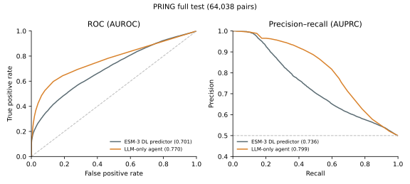
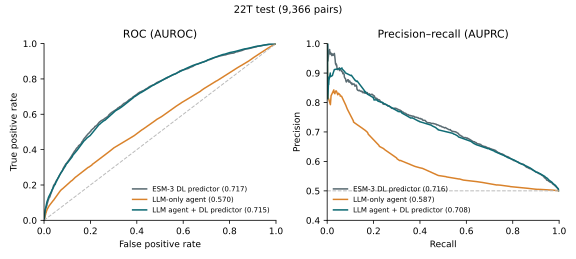
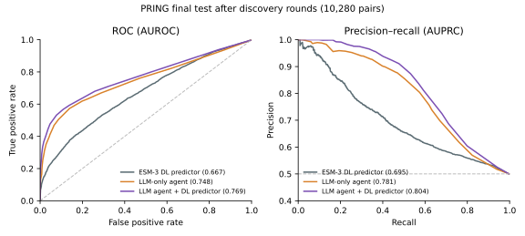
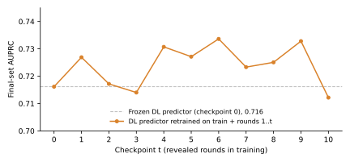
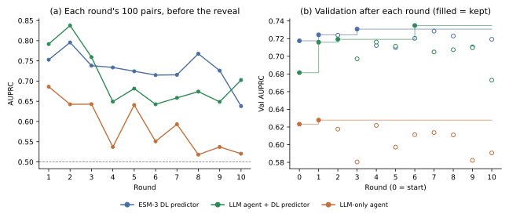

PPI classification tests: LLM agents vs DL predictors
Benchmarks
Every agent is DeepSeek-V4 Pro (thinking high). Each batch of 200 pairs is one fresh LLM session with protein-annotation, homolog and knowledge-base tools (no web) that returns one probability per pair. An agent "+ DL predictor" also gets the predictor's probability for its pairs. The DL predictor is an ESM-3 pair classifier trained on the same knowledge base and scores the same pairs.
PRING, full test (public, human; the DL benchmark task): breadth-first split; train (76,400 labelled pairs) is the knowledge base, and no test protein is in it. The LLM-only agent scores all 64,038 test pairs.
PRING, after discovery rounds (loop with revealed labels): the 2,018 test proteins are split 60/40. On the 60% side the agent runs 10 rounds; each round it picks 200 pairs, and their labels are revealed and kept as memory (1,624 hits in 2,000 picks). The final test is 10,280 labelled pairs (1:1) among the 40% side, scored by the LLM agent with the DL predictor.
22T (private, mouse membrane): 46,821 positives split 8:1:1 at random, each split filled with 1:1 negatives; the test has 9,366 pairs (4,683 positive) among 2,154 proteins.
22T, after reveal rounds (private; labels revealed without picking): the 22T test is cut once into 10 fixed rounds of 100 pairs (50 positive) and a final set of 8,366 pairs (4,183 positive); validation stays for the DL predictor only. Each round, a fresh agent session scores the round's 100 pairs, then their labels are revealed and kept as memory (cases and lessons, as on PRING). After round 10 the memory is frozen and the agent scores the final set. Every model sees the same rounds and the same final set. The DL predictor is retrained from scratch after each round on its knowledge base plus all pairs revealed so far (checkpoint t); in round t the agent + DL predictor gets checkpoint t − 1, and checkpoint 10 for the final set.
Results
Table 1. Test classification on the train/test splits (no loop); threshold-free metrics. AUPRC and AUROC use only the ranking (chance ≈ 0.5); Brier score measures calibration and accuracy of the probabilities. Bold: best within each benchmark.
| Model | AUPRC↑ | AUROC↑ | Brier↓ |
|---|---|---|---|
| PRING human BFS test, full (public), 64,038 pairs | |||
| ESM-3 DL predictor | 0.736 | 0.701 | 0.266 |
| LLM-only agent | 0.799 | 0.770 | 0.326 |
| 22T mouse membrane agent split (private), 9,366 pairs | |||
| ESM-3 DL predictor | 0.716 | 0.717 | 0.222 |
| LLM-only agent | 0.587 | 0.570 | 0.309 |
| LLM agent + DL predictor | 0.708 | 0.715 | 0.218 |


Table 2. PRING final test after 10 discovery rounds with revealed labels; threshold-free metrics only. The DL predictor is retrained from scratch (same configuration and seed) on its knowledge base plus the 1,895 revealed pairs (1,624 hits), as in pool-based active learning; the frozen predictor scores AUPRC 0.695, AUROC 0.667, Brier 0.286. Bold: best.
| Model | AUPRC↑ | AUROC↑ | Brier↓ |
|---|---|---|---|
| PRING final test after 10 discovery rounds (public), 10,280 pairs | |||
| ESM-3 DL predictor, retrained on the round labels | 0.717 | 0.695 | 0.304 |
| LLM-only agent | 0.781 | 0.748 | 0.333 |
| LLM agent + DL predictor | 0.804 | 0.769 | 0.326 |

Table 3. 22T final set (the same 8,366 pairs in every row); threshold-free metrics only, higher is better. "No reveal rounds": the Table 1 runs (empty memory, frozen predictor) scored on these pairs only. Paired-bootstrap AUPRC difference, after minus before the reveal rounds (95% CI): LLM agent + DL predictor −0.018 (−0.027 to −0.009), LLM-only agent −0.018 (−0.030 to −0.005). Bold: best.
| Model | AUPRC↑ | AUROC↑ |
|---|---|---|
| 22T final set, no reveal rounds (private), 8,366 pairs | ||
| ESM-3 DL predictor, frozen | 0.716 | 0.718 |
| LLM-only agent | 0.590 | 0.571 |
| LLM agent + DL predictor | 0.710 | 0.716 |
| 22T final set after 10 reveal rounds (private), 8,366 pairs | ||
| ESM-3 DL predictor, retrained on the round labels (checkpoint 10) | 0.712 | 0.718 |
| LLM-only agent | 0.573 | 0.565 |
| LLM agent + DL predictor | 0.691 | 0.704 |


Why the LLM-only agent differs between public and private data
Table 4. The two LLM-only runs (same model, tools and prompt design; full PRING test and 22T test). Annotation third: pairs split by the shorter UniProt function text of the two proteins. Cited evidence: share of the source IDs the agent lists with its predictions.
| Check | PRING (public, human) | 22T (private, mouse) |
|---|---|---|
| AUROC / AUPRC | 0.770 / 0.799 | 0.570 / 0.587 |
| Precision of confident calls (p ≥ 0.8; share of pairs) | 0.997 (3.2%) | 0.830 (2.0%) |
| AUROC by annotation third (least → most) | 0.681 → 0.810 → 0.818 | 0.531 → 0.584 → 0.592 |
| Cited evidence: protein annotation / knowledge-base pairs | 86% / 2% | 59% / 37% |
Reading
- On public PRING, the agent probably recalls interactions that it already knows. When it is confident (p ≥ 0.8), it is almost always correct: precision 0.997, against 0.830 on 22T. It cites knowledge-base pairs for only 2% of its evidence. Thus the labelled data does not explain its score (Table 4).
- On PRING, the agent does better on well-known proteins. Its AUROC increases from 0.68 to 0.82 as the annotation increases. On 22T, its AUROC stays between 0.53 and 0.59. Thus the annotation text alone does not help the agent (Table 4).
- On 22T, the agent uses the knowledge base more, but this does not help. The agent knows few 22T interactions, so it cites knowledge-base pairs for 37% of its evidence, against 2% on PRING. Its AUROC stays at 0.570 (Table 4).
- On 22T, the revealed labels help no model, and the memory makes both agents worse. The retrained DL predictor moves between 0.712 and 0.734 AUPRC with no trend; 1,000 pairs are about 1% of its training data. On the same pairs, both agents lose 0.018 AUPRC against their runs without reveal rounds (Table 3, Figure 4).
- The agent + DL predictor gets worse because its lessons teach it to distrust the predictor. The reviewer wrote rules from 100-pair rounds such as "never score below about 0.40" and "the predictor may move p only moderately". The agent's distance from the predictor grows from 0.11 in round 1 to about 0.27, and its AUPRC drops below the predictor from round 3 (Figure 5). On the final set, its mean probability is 0.49 for positives and 0.46 for negatives, against 0.56 and 0.38 without reveal rounds.